Tela de Menu
Essa é a tela de menu fictício que criei da Virtual Play:
 

Onde utilizei HTML e CSS, a tela possui abas dedicadas bem intuitivas.
Essa é a tela de menu fictício que criei da Virtual Play:

Onde utilizei HTML e CSS, a tela possui abas dedicadas bem intuitivas.
Essa é uma tela de login Responsiva:

Essa tela possui as funcionalidades de acesso de uma tela de login feita com HTML e CSS
Utilizei uma simples animação para sua apresentação:

A animação utiliza uma transição infinita das cores muito útil em telas iniciais de sites.
Esse poema em cordel da Cora Coralina utilizei efeito de imagem de fundo nos textos:

Assim que é feita a rolagem do site a imagem permanece travada e ai não influencia no site.
Esse é o Studio Sweet

Esse é um site em formato de Portifólio que fiz para Fotográfa Julia Bayer
Espero que Através desse Portifólio posso estar mostrando minhas competências como um futuro programador